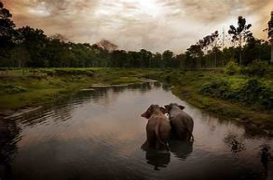
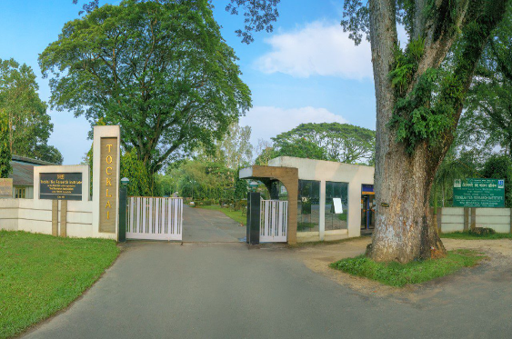

◉ Location : Assam State Museum, Assam,India .
◉ Nearest Railway Station : Guwahati Railway Station ,Assam, India .
◉ Distance from nearest Railway Station :
◉ By Metro :- Nearest to Assam State Museum is Yo Metro Station which is 3 minutes walk away.
◉By Bus :- There is Library Bus Stand near Assam State Museum which is 5 minutes walk away.
◉ Weather Conditions : 16°C Moderately .
◉ Best time to visit : Between October to April .
◉ Opening Timings : 10:00 AM .
◉ Closing Timings : 5:00 PM .
◉ Travel Agency : gt holiday
◉ Travel Agent : Nithesh Kumar
◉ Phone : 09347975119
◉ Hours : Opens 24 hours
◉ Pick-up : Mon-Sat (10am-10pm) & Sun (10am-6pm)
◉ Delivery : Opens 24 hours

◉ Location :Nehru Park, Assam,India .
◉ Nearest Railway Station : Guwahati Railway Station , Assam, India .
◉ Distance from nearest Railway Station :
◉ By Metro :- The nearest metro station to Nehru Park is Lok Kalyan Marg .It 27 min walk away.
◉By Rail:- The nearest railway station to the Nehru Park is Lakshmnath Bezbaruah road . It is a 9-minute walk away.
◉ Weather Conditions : 16°C Moderately .
◉ Best time to visit: November to May. .
◉ Opening Timings : 9:00 AM .
◉ Closing Timings : 6:00 PM .
◉ Travel Agency : KINGHILLS TRAVELS
◉ Travel Agent : Manoj Varma
◉ Phone : 09929542727
◉ Timings : 11am-7pm
◉ Services : Adventure tours, Group tours, Customized tours.